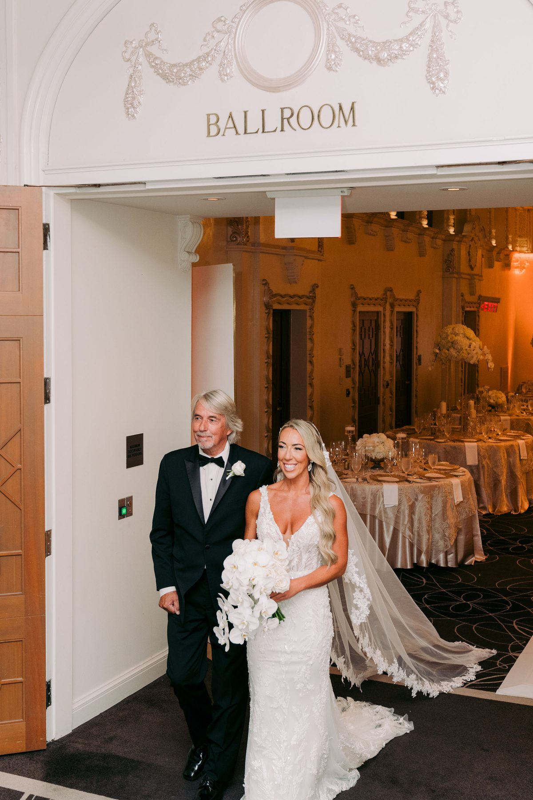
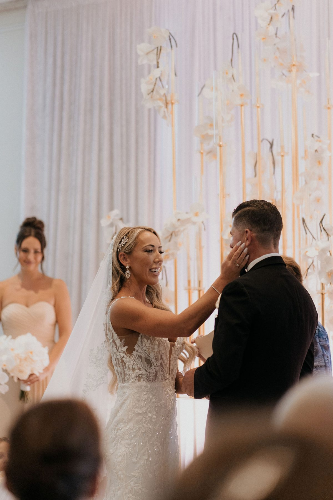

Every couple asks it. Usually around month four, usually right after a friend has told them with total confidence that one option is the correct one.
Here is the truth. Neither is correct. They are two different trades, and the right one depends on what you are willing to give up. Not on what your feed did last week.
We have photographed both more times than we can count. So here is what each one costs you, and what it buys.
A first look is a private moment before the ceremony. We set it up somewhere quiet, one of you walks up behind the other, and you see each other for the first time with nobody watching except us.
An aisle reveal is the traditional version. The doors open, the music starts, the room stands up, and the first time you see each other is with every guest you love in the room.
It mostly comes down to three things. Time, nerves, and light.
Time. With a first look, your couple portraits, wedding party photos and most of the family list happen before the ceremony. After you say I do, you walk straight into cocktail hour with your people instead of disappearing for ninety minutes. For a lot of couples that is the entire argument, and it is a good one.
Nerves. Plenty of people are wound tight all morning. Seeing each other early lets the pressure out. You get to talk, cry, fix a crooked boutonniere, hold hands for ten minutes. By the time you are at the front of the ceremony you feel like a team, not like two people bracing for impact.
Light. This one is not a preference. In late fall and winter, sunset in Vancouver can land around 4:30. If your ceremony starts at 4, the only way to get portraits in daylight is to take them first. We will always tell you when your date forces this.
It is the one moment of the day that cannot be restaged.
The couple in these photos chose the aisle reveal at the Fairmont, and the frame at the top of this page is the one I would save from a fire. He is holding it together. Barely. That face happens once, and part of why it happens is that the whole room is holding its breath with him.

Here is the slightly contrarian bit. A first look is quieter, and quieter is not automatically better. Some people are more themselves in private. Some people need the room. The swell of the music and a hundred faces turning is a real force, and it is a big part of what the tears are made of.
It is also easier to organize. No second location, no hiding in a stairwell, no coordinator texting to make sure the coast is clear.
"A first look ruins the aisle moment." It does not. The reaction at the front of the ceremony is still big. It is different. Less shock, more warmth. You have already seen the dress, so now you are looking at the person.
"Skipping the first look means missing cocktail hour." Only with a bad timeline. Keep the family list tight, run it fast right after the ceremony, and save your couple portraits for twenty minutes of golden hour during dinner. You will be back with your guests before the second round of canapés.
"First look photos are better." Not really. They are more intimate. The aisle reveal gives you something a first look never can. Your mom's face. Your best friend losing it in row two. The groomsman who swore he would not cry. Those reactions only exist when there is an audience.
Try a first touch. Stand on either side of a door or a corner, hold hands, and do not look. Read letters, say a few things you want to say before it gets loud. You let the nerves out and you keep the reveal.
Or do a first look with a parent instead. A dad seeing his daughter dressed for the first time is its own moment, it costs you nothing at the aisle, and it is often the most emotional ten minutes of the morning.

If you are still split after those three, do the aisle reveal and add a first touch. It is hard to regret.
Our job does not change, only where we stand. For a first look we scout a spot with soft light and real privacy, and the second shooter stays well out of sight. For an aisle reveal, one of us is locked on the person waiting at the front and the other is on the person walking in, so you get both faces in the same second. On the SOCIAL package your content creator catches the vertical version for reels at the same time.
That is why we ask about this at booking, not the week before. It shapes the whole timeline, from hair and makeup call times to when the family list happens.
SimplyWed Studio photographs weddings and elopements across Vancouver. Send us your date and venue. We will check the sunset and tell you which one we would pick.
← Back to the journal